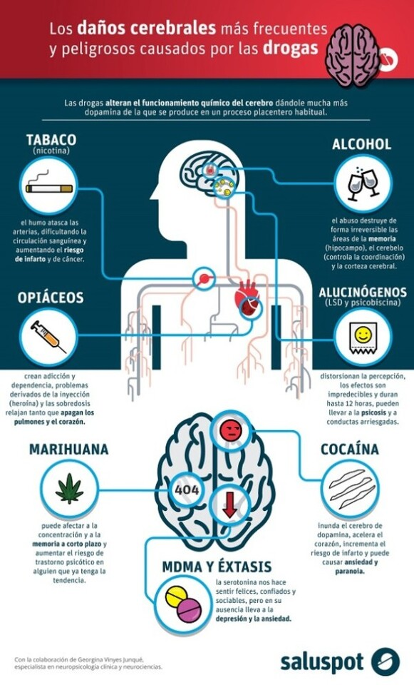

- Enfermedades pulmonares
- Enfermedades cardiacas
- Cáncer
- Problemas dentales
- Riesgo de contraer infecciones
- Sudoración
- Temblores
- Ojeras
- Nerviosismo
- Impaciencia
- La adicción es considerada una enfermedad cerebral puesto que las drogas cambian el cerebro modificando su estructura y funcionamiento. Estos cambios son los responsables de los comportamientos peligrosos que se observan en las personas adictas.
- Destruir las células nerviosas del cerebro o del sistema nervioso periférico (el sistema nervioso fuera del cerebro y la médula espinal).
- Se puede desarrollar una enfermedad mental.
- Pérdida de memoria.
- Modifica la percepción del espacio y tiempo.
- Alucinaciones.

- El adicto sufre una perdida del control en la limitación de la ingesta. Su objetivo es el consumo, por lo que se convierte en su prioridad y el resto de ámbitos quedan en un segundo plano.
- La persona continua consumiendo aun sabiendo que esta padeciendo problemas importantes como alteraciones en el comportamiento o disminución de las habilidades cognitivas (memoria, lenguaje, atención, orientación…).
- Ansiedad
- Depresión
- Esquizofrenia
- Estrés
- Baja autoestima
- Rechazo por parte del entorno familiar y las amistades
- Rechazo social
- Aislamiento
- Pérdida de empleo
- Problemas económicos
- Conflictos
- Marginación
- Desorden público
- Conflictos con la autoridad